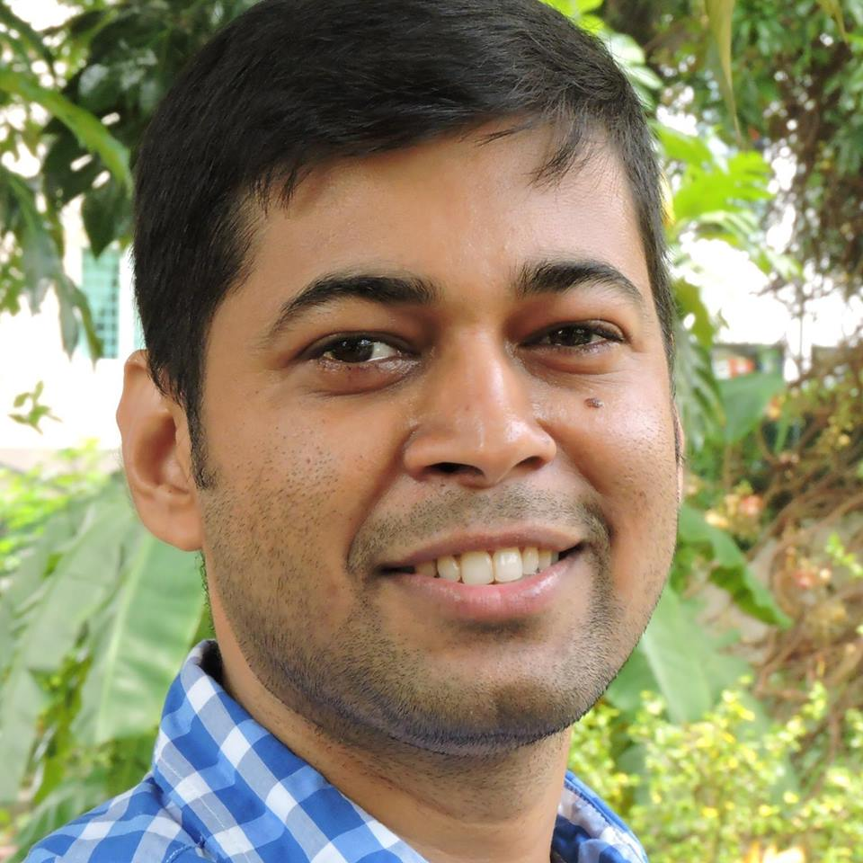

Contact
Contact

National University of Singapore
13 Computing Drive
Singapore 117417
nayakt [at] u [dot] nus [dot] edu
tnk02 [dot] 05 [at] gmail [dot] com
I am a PhD student (Aug, 16 - July, 20) at the School of Computing,
National University of Singapore
under supervision of Prof. Ng Hwee Tou. My research interest lies in machine learning and deep learning approaches for natural language understanding. Currently, I am working on Information extraction and knowledge base population.
Education
| 2016 - Present | Ph.D. in Computer Science, National University of Singapore, Singapore |
| 2014 - 2016 | M.E. in Computer Scinece & Engineering, Jadavpur University, Kolkata, India |
| 2005 - 2009 | B.E. in Computer Scinece & Engineering, Jadavpur University, Kolkata, India |
Work Experience
| 2012 - 2014 | Senior Consultant, PricewaterhouseCoopers India, Kolkata, India |
| 2009 - 2012 | Software Engr I, Hewlett-Packard India Software Operations, Bangalore, India |